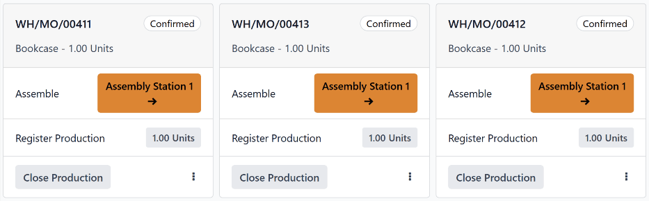

Shop Floor overview¶
The Shop Floor module is a companion module to the Manufacturing app. Shop Floor provides a visual interface for processing manufacturing orders (MOs) and work orders. It also allows manufacturing employees to track the amount of time spent working on manufacturing and work orders.
The Shop Floor module is installed alongside the Manufacturing app. It cannot be installed by
itself. To install the Manufacturing app, navigate to , search for
manufacturing in the Search… bar, and then click Install on the
Manufacturing app card.
Important
The Shop Floor module replaces the tablet view functionality of the Manufacturing app, and is only available in Odoo versions 16.4 and later.
To check the version number of an Odoo database, navigate to and scroll down to the About section at the bottom of the page. The version number is displayed there.
To switch to a newer version of Odoo, see the documentation on upgrading a database.
Navigation¶
Shop Floor is broken down into three main views, which can be selected from the navigation bar at the top of the module:
The All page serves as the main dashboard for the module, and displays information cards for MOs.
Each work center also has a dedicated page, which shows information cards for work orders assigned to that work center. Work center pages can be toggled on or off by clicking the + (plus) button in the navigation bar, selecting or deselecting them on the pop-up window that appears, and then clicking Confirm.
The My page shows information cards for all work orders assigned to the employee whose profile is currently active in the operator panel on the left side of the module. Other than only showing work orders assigned to the active employee, this page functions the same as the pages for each work center.
Tip
To isolate an MO or work order, so that no other orders appear, simply search the reference number of the MO in the Search… bar at the top of the module. This search filter remains active while switching between the different module views.
On the left side of the module is the operator panel, which shows all of the employees currently signed in to Shop Floor, and allows new employees to sign in. The operator panel is always available in the module, regardless of which view is selected. It can be toggled on or off by clicking the sidebar button at the extreme left of the navigation bar.

All page¶
By default, the All page shows an information card for every MO that is ready to start. An MO is considered ready to start once it has been confirmed, and all required components are available.
To view every confirmed MO regardless of readiness, click the x button on the Ready to Start filter to remove it from the Search… bar.
MO information card¶
An MO information card on the All page shows all of the relevant details of the associated MO, and also provides employees with options for processing the MO.
The header for an MO card shows the MO number, the product and number of units being produced, and the status of the MO. If work has not yet begun on the MO, the status appears as Confirmed. Once work has begun, the status updates to In Progress. If all work orders for an MO have been completed and the MO is ready to close, the status updates to To Close.
The main body of an MO card shows a line for each completed work order, if any, followed by the current work order that needs to be completed. Completed work orders are indicated by a green check mark to the right of title of the work order. The current work order is indicated by a button that opens the page for the work center to which the order is assigned.
Below the current work order is a line titled Register Production, which is used to record the number of product units produced. To manually enter the number of units produced, click on the Register Production line, enter a value in the Units field of the resulting pop-up window, then click Validate.
Alternatively, click the # Units button on the right side of the line, which automatically records the number of units the MO was created for as the number of units produced. For example, if an MO is created for 10 units of a dining table, clicking the 10 units button records that 10 units were produced.
The footer of the MO card displays a Close Production button. This is used to close the MO once production is completed. However, if there are any quality checks required for the MO as a whole (not the work orders within it), a Quality Checks button appears instead. Clicking Quality Checks opens a pop-up window, from which any required quality checks can be completed.
After clicking Close Production, the MO card begins to fade away, and an Undo button appears on the footer. Clicking Undo causes the MO to remain open. Once the MO card disappears completely, the work order is closed.
On the right side of the footer is an ⋮ (options) button, which opens a pop-up window with additional options for the MO:
Scrap is used to send components to a scrap location when they are found to be defective.
Add Work Order is used to add an additional work order to the MO.
Add Component is used to add an additional component to the MO.
Open Backend MO opens the MO in the Manufacturing app.

Work center pages¶
By default, the page for each work center shows an information card for every work order assigned to it that is ready to start. A work order is considered ready to start once the MO it is a part of is ready to start, and any preceding work orders have been completed.
To view every confirmed work order assigned to a work center regardless of readiness, click the x button on the Ready to Start filter to remove it from the Search… bar.
Work order information card¶
A work order information card on a work center’s page shows all of the relevant details of the associated work order, and also provides employees with options for processing the work order.
The header for a work order card shows the reference number of the MO that the work order is a part of, the product and number of units being produced, and the status of the work order. If work has not yet begun on the work order, the status appears as To Do. Once work has begun, the status updates to display a timer showing the total time the work order has been worked on.
The main body of a work order card shows a line for each step required to complete the work order. Work order steps can be completed by clicking on the line, then following the instructions on the pop-up window that appears. Alternatively, clicking the checkbox on the right side of each line automatically marks the step as completed.
Below the final step of the work order is a line titled Register Production, which functions the same as the Register Production line on an MO card. Registering the number of units produced using the Register Production line on a work order card also completes the step for the associated MO card.
If the work order being processed is the final work order for the MO, a Close Production button appears on the footer of the work order card. Clicking Close Production closes both the work order and the MO, unless a quality check is required for the MO. In this case, the quality check must be completed from the MO card before the MO can be closed.
Alternatively, if the MO requires the completion of additional work orders, a Mark as Done button appears instead. Clicking Mark as Done marks the current work order as completed, and causes the next work order to appear on the page for the work center it is assigned to.
After clicking Close Production or Mark as Done, the work order card begins to fade away, and an Undo button appears on the footer. Clicking Undo causes the work order to remain open. Once the work order card disappears completely, the work order is marked as Finished on the MO.
On the right side of the footer is an ⋮ (options) button, which opens a pop-up window with additional options for the work order:
Scrap is used to send components to a scrap location when they are found to be defective.
Add Component is used to add an additional component to the MO.
Move to work center is used to transfer the work order to a different work center.
Suggest a Worksheet improvement allows the user to propose a change to the work order’s instructions or steps.
Create a Quality Alert opens a quality alert form that can be filled out to alert a quality team about a potential issue.

Operator panel¶
The operator panel is used to manage the employees that are signed in to the Shop Floor module. The panel shows the name and profile picture of every employee that is currently signed in across all instances of the database.
To interact with Shop Floor as a specific employee, click the employee’s name to activate their profile. Profiles that are not active appear with their names and profile pictures greyed-out.
When an employee is selected in the operator panel, they can begin working on a work order by clicking the work order’s heading. If an employee is working on one or more work orders, the work order title(s) appear under their name, along with a timer showing how long they’ve been working on each order.
To add a new employee to the operator panel, click the + Add Operator button at the bottom of the panel. Then, select an employee from the Select Employee pop-up window.
To remove an employee from the operator panel, simply click the x button next to their name in the panel.

MO/WO prioritization¶
The Shop Floor module uses the scheduled date entered on MOs to prioritize the MOs and work orders that appear on the module’s dashboard and work center pages. MOs and work orders scheduled sooner are more highly prioritized, and appear before orders which are scheduled further out.
To specify the scheduled date on an MO, begin by navigating to , and click New to create a new MO.
Click on the Scheduled Date field to open a calendar popover window. By default, the Scheduled Date field, and its corresponding pop-up window, show the current date and time.
Use the calendar to select the date on which processing should begin for the MO. In the two fields at the bottom of the popover window, enter the hour and minute at which processing should begin, using the 24-hour clock format.
Finally, click Apply at the bottom of the popover window to set the date and time for the Scheduled Date field. Then, click the Confirm button at the top of the MO to confirm it.
Once the MO is confirmed, it appears in the Shop Floor module, as long is it has the Ready status, which means all components are available.
On the Odoo dashboard, click on the module to open it. The All MO # page of the dashboard displays Ready MOs, organized in order of their scheduled dates.
At the top of the module, select a work center to see the work orders assigned to it. The page for each work center organizes work orders, based on the scheduled dates of their corresponding MOs.
Example
Three MOs are confirmed for a Bookcase product:
WH/MO/00411 has a Scheduled Date of August 16th.
WH/MO/00412 has a Scheduled Date of August 20th.
WH/MO/00413 has a Scheduled Date of August 18th.
On the All MO # page of the Shop Floor module, the cards for each MO appear in this order: WH/MO/00411, WH/MO/00413, WH/MO/00412.
Each MO requires one work order, carried out at Assembly Station 1. Clicking on the Assembly Station 1 button at the top of the screen opens the page for the work center, which displays one card for each work order, appearing in the same order as their corresponding MOs.